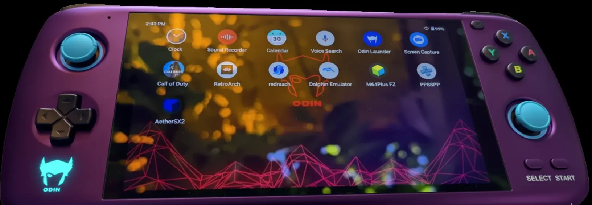

AetherSX2: o emulador que faz o PlayStation 2 caber no seu bolso
Se alguém tivesse contado, anos atrás, que um celular poderia rodar jogos do PlayStation 2 com qualidade, provavelmente a reação seria uma boa risada. Afinal, o PS2 marcou época por sua potência e sua biblioteca gigante de jogos. Hoje, isso não é mais piada. Graças ao AetherSX2, o sonho se tornou real.
O AetherSX2 é um emulador de PS2 para Android que permite jogar seus clássicos favoritos diretamente no celular ou tablet. Ele é rápido, leve e gratuito. Para quem sempre quis reviver aquelas tardes de jogatina em títulos como God of War, GTA San Andreas ou Resident Evil, a resposta está aqui: basta baixar e instalar o app.
No site oficial aethersx2, você encontra o APK atualizado, pronto para rodar sem complicações. A proposta é simples: dar acesso a milhares de jogos do PlayStation 2, sem travamentos e com todos os recursos que tornam a experiência ainda melhor.
O que é o AetherSX2 e por que todo mundo está falando dele
O AetherSX2 é um aplicativo que roda os jogos de PS2 diretamente em dispositivos Android. Diferente de outros programas cheios de anúncios ou cheios de limitações, este foi feito para funcionar de maneira fluida e sem dor de cabeça.
O que chama atenção é que o aplicativo consegue reproduzir praticamente qualquer título do PlayStation 2, desde os mais leves até os mais pesados. É como carregar uma coleção inteira de jogos dentro do celular, sem precisar de consoles antigos, cabos ou televisões enormes.
A grande vantagem é que o AetherSX2 foi construído com foco na estabilidade. Ele não trava, não pesa no sistema e, acima de tudo, é gratuito. Isso já explica o motivo de tanta gente comentar sobre ele. É raro ver algo tão completo sem pedir nada em troca.
Como o AetherSX2 funciona na prática
Rodar jogos de PS2 em um celular pode parecer mágica, mas na verdade é tecnologia bem aplicada. O emulador usa recursos do aparelho para imitar o funcionamento do console original. Isso significa que cada detalhe gráfico, som e mecânica do jogo é recriado dentro do Android.
Na prática, você só precisa baixar o APK no site oficial, instalar no dispositivo e carregar as imagens dos jogos. O aplicativo faz todo o trabalho pesado, e o resultado é uma jogabilidade estável. Claro, quanto mais potente for o celular, melhor será o desempenho. Mas mesmo em modelos intermediários, os jogos funcionam sem problemas.
Outro ponto interessante é que o emulador tem suporte a controles externos. Ou seja, você pode conectar um joystick Bluetooth e transformar o celular em um verdadeiro console portátil. Não há nada mais satisfatório do que jogar um clássico de corrida ou luta sem depender apenas da tela sensível ao toque.
A experiência de jogar PS2 no Android
Jogar no AetherSX2 é uma mistura de nostalgia e praticidade. Imagine poder abrir o celular no intervalo da escola ou no transporte e continuar de onde parou em Final Fantasy ou Tekken. Essa sensação de carregar um console inteiro no bolso é o que conquista tanta gente.
Além disso, o aplicativo permite ajustar gráficos, resolução e até aplicar filtros que deixam os jogos mais bonitos do que no console original. É como se os clássicos ganhassem uma nova vida, com qualidade visual que acompanha os tempos atuais.
Outra parte divertida é a possibilidade de salvar o jogo a qualquer momento. Quem nunca passou raiva por perder horas de progresso por não encontrar um ponto de save? No AetherSX2, basta um toque para garantir que nada será perdido.
E sim, até os detalhes sonoros são preservados. Aquela trilha épica de Shadow of the Colossus ou os efeitos marcantes de Devil May Cry continuam com a mesma força, só que agora saindo dos fones de ouvido ou das caixinhas de som do celular.
Facilidade de instalação: sem segredos
Uma das maiores vantagens do AetherSX2 é a simplicidade para instalar. Muitas pessoas ficam com medo de baixar aplicativos fora da Play Store, mas no site oficial o processo é totalmente seguro. O APK é leve, não exige cadastros complicados e pode ser instalado em poucos minutos.
Depois de baixar, basta permitir a instalação no Android e pronto. O app aparece no menu como qualquer outro aplicativo comum. Não é preciso configurar nada técnico ou quebrar a cabeça com ajustes misteriosos. Até quem nunca instalou um APK consegue fazer isso sem dificuldades.
Além disso, o site aethersx2.com.br sempre disponibiliza a versão mais atualizada. Isso significa que você não vai precisar ficar caçando links estranhos na internet. Tudo está reunido em um único lugar, com segurança e confiabilidade.
Recursos que fazem diferença
O AetherSX2 não é apenas um emulador qualquer. Ele vem cheio de recursos que tornam a experiência mais completa. Um dos destaques é o suporte a múltiplos formatos de imagem de jogo, o que dá liberdade para rodar praticamente qualquer arquivo que você tenha.
Outro ponto é o sistema de personalização dos controles. Dá para configurar cada botão na tela de acordo com a preferência do jogador. Isso ajuda bastante, porque cada game tem um estilo próprio, e adaptar os comandos deixa tudo mais confortável.
Também há opções de gráficos que podem ser ajustados conforme o aparelho. Quem tem um celular mais simples pode reduzir a qualidade e ainda assim jogar sem travar. Já quem possui um aparelho mais forte pode aumentar a resolução e ver os jogos em alta definição.
E não podemos esquecer do suporte a cheats. Sim, aquele recurso que fazia parte da diversão no PS2 continua aqui. É possível ativar truques e se divertir como nos velhos tempos. Afinal, quem nunca usou códigos no GTA só para ver a bagunça acontecer?
Segurança e confiabilidade
Uma preocupação comum de quem baixa aplicativos fora da loja oficial é a segurança. No caso do AetherSX2, o APK disponível no site oficial é 100% seguro. Ele não vem com vírus, não coleta informações pessoais e não instala nada escondido no celular.
O app foi projetado apenas para cumprir a função de emulador. E cumpre muito bem. Essa confiança é um dos pontos que fez o programa ganhar tantos usuários ao redor do mundo. Afinal, ninguém gosta de arriscar o aparelho por causa de um aplicativo suspeito.
Saber que o AetherSX2 é confiável permite que o jogador aproveite a experiência sem medo. Basta baixar, instalar e curtir os jogos. Simples assim.
Gratuidade que vale ouro
Talvez a parte mais surpreendente do AetherSX2 seja o fato de ser totalmente grátis. Em um mercado onde muitos aplicativos enchem a tela de propagandas ou cobram assinaturas caras, encontrar algo desse nível sem custo é raro.
Isso abre portas para todo tipo de jogador. Não importa se você tem 15 ou 50 anos, se gosta de RPG ou corrida, se está começando agora ou já era fã do PS2 desde sempre. Qualquer pessoa pode baixar e aproveitar, sem precisar gastar um centavo.
É quase inacreditável pensar que você pode ter acesso a toda a biblioteca do PlayStation 2 sem gastar nada além da memória do celular. Nesse ponto, o AetherSX2 se torna uma opção que conquista pelo bolso e pelo coração.
Por que o AetherSX2 se tornou indispensável
O sucesso do AetherSX2 não é por acaso. Ele une nostalgia, praticidade e qualidade em um só pacote. Enquanto outros emuladores pecam em estabilidade ou cobram caro, este se mantém gratuito, leve e seguro.
Ele devolve aos jogadores a chance de reviver clássicos inesquecíveis em qualquer lugar. Não importa se você está em casa, no ônibus ou até mesmo na fila do banco. O celular se transforma em uma máquina do tempo que leva direto para a era dourada do PS2.
E convenhamos: não existe nada mais divertido do que surpreender os amigos mostrando que o celular roda God of War 2 com a mesma intensidade do console original.
O futuro do AetherSX2
Com atualizações frequentes, o AetherSX2 continua melhorando a cada versão. Isso garante que ele se mantenha relevante mesmo com o avanço da tecnologia. Os desenvolvedores estão sempre atentos para corrigir problemas e adicionar melhorias que deixam o aplicativo ainda mais estável.
O futuro parece promissor, já que cada atualização traz mais compatibilidade e desempenho. Para os jogadores, isso significa uma experiência cada vez mais próxima da perfeição.
E se o presente já é tão bom, dá para imaginar o que ainda está por vir. O importante é que, hoje, o AetherSX2 já entrega tudo o que os fãs de PS2 poderiam querer.
Considerações finais
O AetherSX2 se consolidou como o melhor emulador de PS2 para Android. Ele é gratuito, leve, seguro e fácil de usar. Além disso, oferece uma experiência completa, com gráficos ajustáveis, suporte a controles externos, cheats e sistema de salvamento rápido.
Para quem sempre sonhou em jogar os clássicos do PlayStation 2 no celular, esse é o aplicativo perfeito. E o melhor: não há truque escondido. É só baixar no aethersx2.com.br, instalar e começar a reviver os melhores momentos da história dos videogames.
Se o PS2 marcou sua infância, agora ele pode marcar também o seu presente. Tudo isso graças ao AetherSX2, que colocou um dos consoles mais amados de todos os tempos dentro da palma da sua mão.